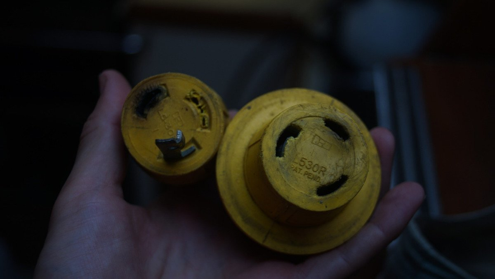
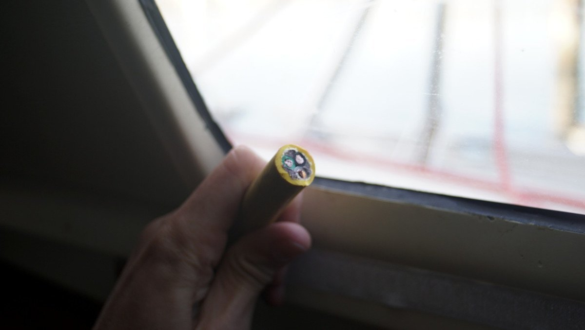
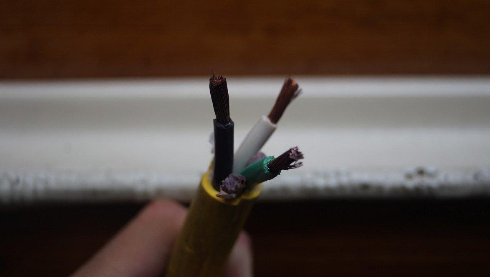
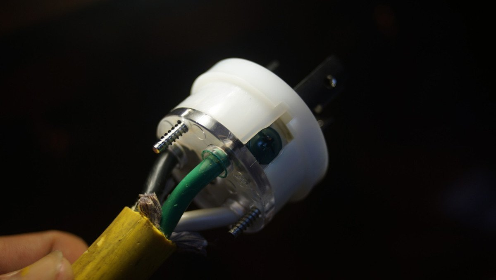
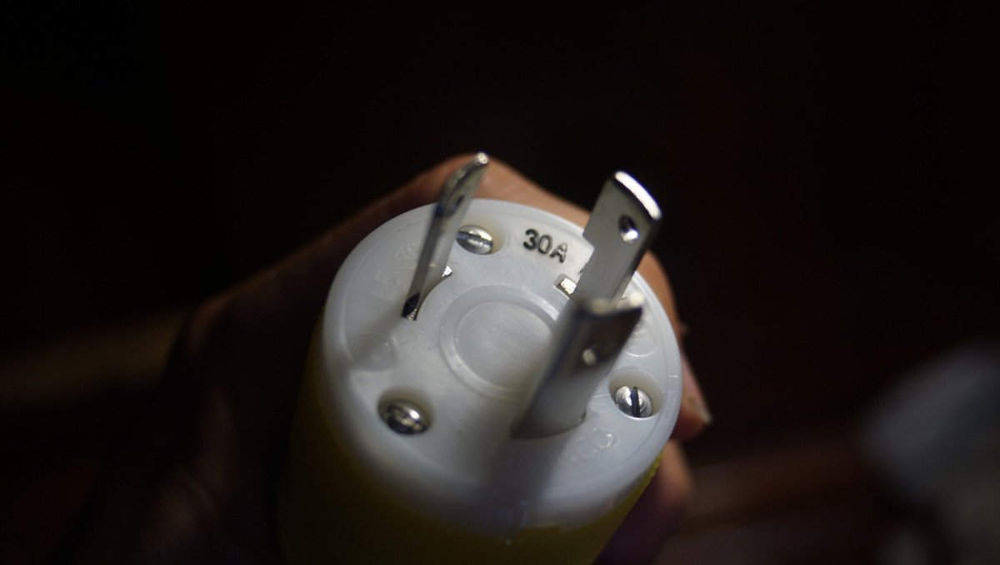
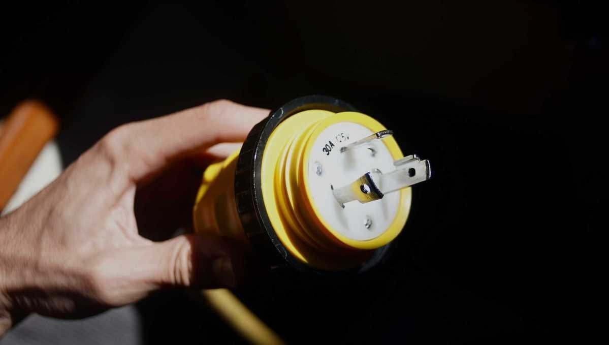

shore power cord repair
21.09.01. North Saanich, BC, Canada.
Scroll down for more recent updates.
On a rainy summer day, we pulled into Silva bay on Gabriola Island and found a place at a dock to wait out a spell of bad weather. The power receptacle appeared fine, but once we were ready to leave we found the male connection of our shore power cord had melted. Two out of three prongs were stuck in the receptacle. We've never had issues with our cord before, and for now we assume that the marina shore connection was faulty. Either way, we had to repair the power cord.
We always prefer to repair than to replace, so when we returned to a place with a marine store, we got ourselves replacements connections, both male and female, to replace the two damaged ends.
We thought we'd document the process of fixing a shower power cord. Although, this is only specific to Marinco marine fittings.
In all, we got:
- 1x30 amp Marinco female connector (305CRCN)
- 1x30 amp Marinco female connector weatherproof cover (305CRCN)
- 1x30 amp Marinco male connector (305CRPN)
- 1x30 amp Marinco male connector weatherproof cover (305CRPN)
We re-used both the old wire, as well as the old sealing ring (we have one at both ends).
The cord itself was fine, the wires were nice and red with no corrosion present. We cut the old heads off with a pair of shears.
We passed the weather proof covers first, one on each end, adding a bit of dish soap to help them along the wire. Then we unscrewed the top 3 screws on the head of each connector, separating the white part from the yellow part. Like the weatherproof cover, we slid the yellow part over the wire first. The yellow half has 2 screws at its base, used to secure the housing to the wire later.
We then striped roughly 1 1/2" of the yellow outer sleeve of the power cord wire to reveal 3 smaller wires tucked inside: a black, white and green (ground). The wire also had some packing, which we cut down.
We stripped 1/4" of the ends of the 3 wires, and inserted them in their corresponding slots.
Each slot has a screw matching the color of the wire. Then, we tightened each colored screw to secure each wire.
We slid the bottom part of the connector housing toward the top half, lining up the slots, and then added the 3 screws back in to secure the two halves together. Then, we alternated screwing the two screws on the bottom of the yellow part of the housing to secure the wire housing to the wire.
Then, we slid the weatherproof cover overtop with the lock ring in place, and voila! Our power cord was as good as new.
If purchasing a weatherproof cover, be sure to get the one matching the product code of the male or female connector (305CRCN). The two are almost identical, but the one for the male connector (305CRPN) comes with a sealing ring, and is a bit longer.
